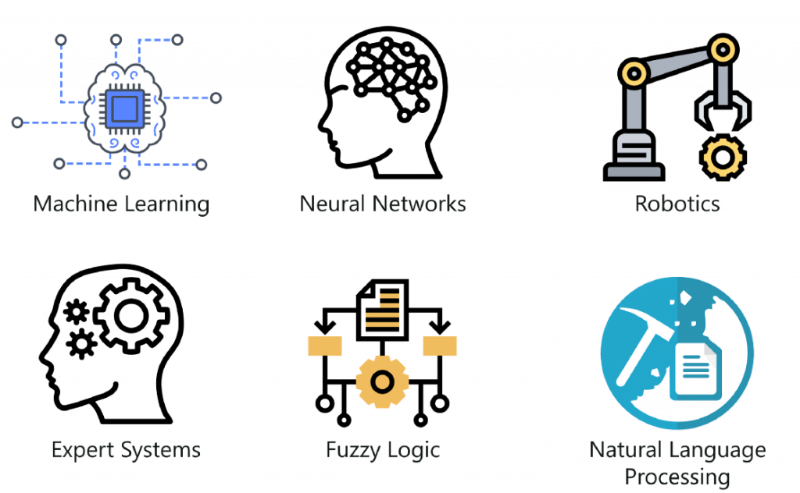

La inteligenicia artificial (IA) es un campo de informática que se dedica
a crear sistemas y
Programas capaces de realizar tareas que, tradicionalmente,requerían
inteligencia humana.
Estos sistemas utilizan algoritmos y modelos para procesar información, aprender de datos previos y tomar decisiones autónomas.
El objetivo fundamental de la AI es emular y ampliar las capacidades cognitivas humanas, permitiendo a las máquinas
realizar actividades como el aprendizaje, la percepción, el razonamiento y la resolución de problemas.
"La inteligencia artificial es el arte de hacer que las máquinas realicen cosas que requerirían inteligencia si fueran hechas por humanos." - Marvin Minsky
Las aplicaciones de la inteligencia artificial (IA) abarcan una amplia variedad de campos y sectores, desde la atención médica hasta la industria automotriz.
La (IA) se utiliza para automatizar tareas, tomar decisiones basadas en datos, mejorar la eficiencia y resolver problemas complejos.
Algunos ejemplos incluyen diagnósticos médicos, chatbots de servicio al cliente, sistemas de recomendación en línea y vehículos autónomos.
La AI continúa transformando la forma en que interactuamos con la tecnología y abriendo nuevas posibilidades en diversas industrias.
"La inteligencia artificial es la capacidad de adquirir y aplicar conocimientos." - Russell S. Taylor
La(IA) abarca diversas ramas que se centran en diferentes aspectos y aplicaciones. Algunas de las principales ramas incluyen:
Aprendizaje Automático (ML):Es una rama de la inteligencia artificial que se enfoca en desarrollar algoritmos y modelos que permiten a las máquinas aprender patrones y tomar decisiones basadas en datos, sin ser programadas explícitamente.
Redes Neuronales (NN): Son un tipo de modelo de aprendizaje automático inspirado en la estructura del cerebro humano. Consisten en capas de unidades llamadas neuronas artificiales que procesan información y pueden utilizarse para tareas como clasificación y reconocimiento de patrones.
Robótica (Robotics): La robótica combina la inteligencia artificial con la ingeniería para diseñar y construir robots. Los robots son máquinas programables que pueden realizar tareas físicas o cognitivas en entornos variados, desde fábricas hasta exploración espacial.
Sistemas Expertos (ES): Son sistemas de software diseñados para imitar el conocimiento y la toma de decisiones de un experto humano en un dominio específico. Utilizan reglas y hechos para ofrecer recomendaciones y soluciones en áreas como diagnóstico médico y soporte técnico.
Lógica Difusa (Fuzzy Logic): La lógica difusa se utiliza en situaciones donde las condiciones no son completamente verdaderas ni completamente falsas, sino que pueden ser parcialmente verdaderas. Ayuda en la toma de decisiones en contextos donde la precisión no es absoluta, como en sistemas de control.

"La inteligencia artificial es la simulación de procesos de inteligencia humana mediante la programación de sistemas de cómputo.· - John McCarthy